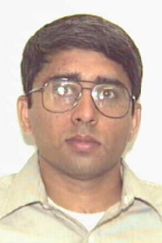
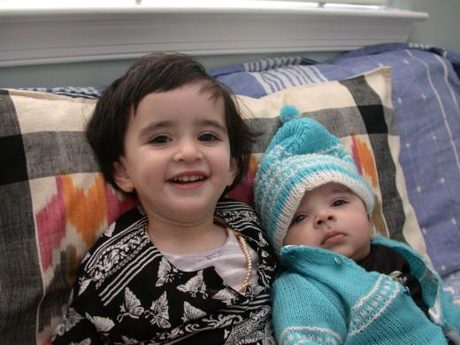

This is a pretty poor picture, but it is all I have for now! Watch this
space ...
I'm from the city of Pune , which is about a hundred miles southeast
of Bombay . My father worked with the Indian Railways,
a government enterprise that manages the extensive rail network in India.
As a result, I've lived in various parts of India - in Calcutta , Bombay,
Chittaranjan (West Bengal), and Guwahati (Assam). I stayed in Pune for
my high school years; then, I was off to Madras for undergraduate studies
at the IIT. Moving around has been a lot of fun - I have had the
chance of experiencing various cultures, languages, and foods!
I enjoy reading, listening to music, and playing badminton, racquetball,
and recently, squash. Some of my favourite authors are Leo Tolstoy, J.R.R.
Tolkien, and P.G. Wodehouse; I'm also a big Shakespeare fan!
My wife Chitra and I have two kids:
a daughter, Tanvi, born March 3rd, 2002, and
a son, Gautam, born October 22nd, 2003.

Tanvi (2 years) with Gautam (4 months)